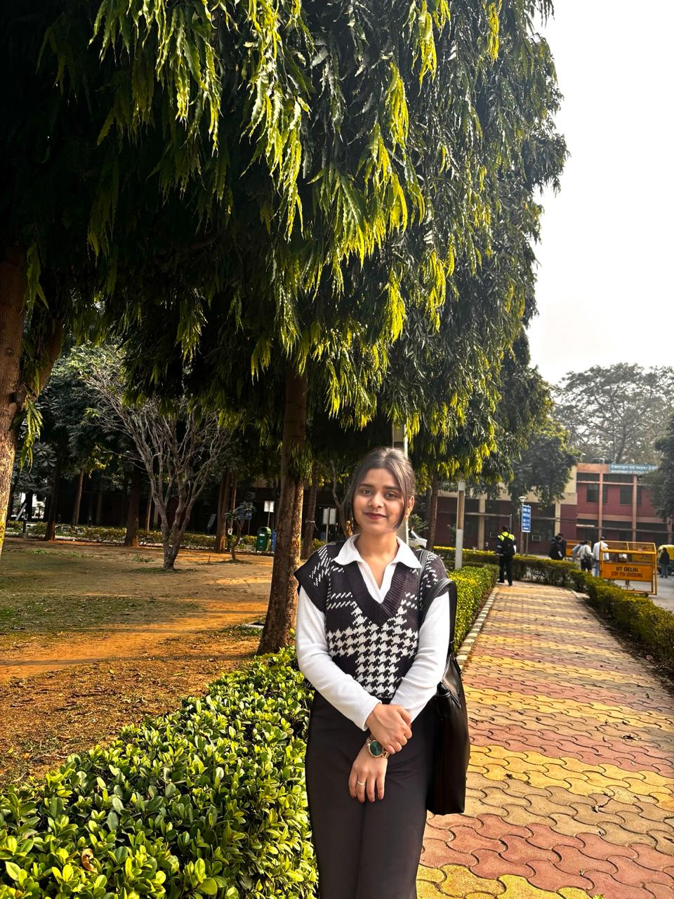

SHREYA GUPTA
AI / ML · FULL-STACK DEVELOPER Turning data and ideas into practical technology.SHREYA GUPTA — SELECTED WORK
OPEN TO INTERNSHIP OPPORTUNITIES
Curious minds
build what’s next.
Computer Science undergraduate with hands-on experience in Python-based data analysis, machine learning, and practical software solutions for real-world challenges.
A LITTLE ABOUT ME

Hey, I’m Shreya Gupta.
I’m a Computer Science and Engineering student passionate about AI/ML, data analysis, software engineering, and building technology-driven solutions to real-world problems.
My interests span data analytics, intelligent systems, IoT, and full-stack development. I enjoy exploring new technologies, turning ideas into practical projects, and collaborating with tech communities to make a meaningful impact.
My approach is hands-on, curious, and focused on continuous learning—from understanding the problem to cleaning data, training models, building solutions, and evaluating practical outcomes.
EDUCATION
LEADERSHIP, COMMUNITY & LEARNING
Outside the code, too.
I enjoy bringing people together, supporting technical initiatives, and learning by building real-world, people-focused solutions.
CURRICULUM / PDF
Resume 2026
Computer Science (IoT), AI/ML, data analytics, and software development.
Professional Summary
Computer Science undergraduate with hands-on experience in Python-based data analysis, data preprocessing, exploratory data analysis, visualization, and machine learning. Interested in using data to identify patterns, evaluate trends, and generate actionable insights.
Education
- B.Tech (CSE - IoT)Noida Institute of Engineering and Technology8.4/10 • 2024 – Present
- Senior Secondary (PCM)BKD Aldrich Public School, Orai80% • 2024
Technical Skills
- Programming: Python, SQL, Java
- Data Analysis: Pandas, NumPy, Data Cleaning, EDA, Missing Value Handling, Statistical Analysis
- Visualization: Matplotlib, Seaborn, Dashboard Design
- Machine Learning: Scikit-learn, Feature Engineering, Preprocessing, Model Evaluation
- Databases: MySQL, MongoDB
- Tools: Jupyter Notebook, Google Colab, Git, GitHub, MS Excel
- Core Concepts: Data Structures, OOP, DBMS, Operating Systems, Computer Networks
Projects
- AI-Assisted HSRP Recognition & Smart Campus ParkingPython, YOLO, OCR, OpenCV, Raspberry Pi, Flask, IoTDeveloped an edge-AI parking system with automatic number plate detection, occupancy monitoring, and automated access control.
- Personal Portfolio WebsiteHTML, CSS, JavaScriptDesigned and developed a responsive personal portfolio to showcase skills, projects, and professional experience.
- AI-Powered GitHub CloneReact.js, Vite, Node.js, Express.js, MongoDBBuilt a GitHub-inspired platform with repository management, AI-powered code review, and README generation features.
- Smart Inventory & Supply Chain Analytics PlatformPython, MySQL, Machine Learning, Data AnalyticsCreated an analytics platform for stock monitoring, trend analysis, forecasting, and risk detection.
- Mental Health Score PredictionPython, Pandas, NumPy, Scikit-learn, MatplotlibBuilt a regression model to predict mental health scores and analyze lifestyle-related factors affecting outcomes.
Positions of Responsibility
- Serving as Vice President of Machine Magnets, the AI/ML and Technical Club at NIET.
- Selected as an Open Source Contributor in GirlScript Summer of Code (GSSoC'26).
- Participated in Smart India Hackathon (SIH) and multiple college-level hackathons.
Certifications
- Linux OS Fundamentals — Infosys Springboard
This opens the original resume PDF stored with the site. Use the floating glass button to open it and download a copy.
GOOD THINGS START WITH A HELLO
Let’s build
what’s next.
I’m open to internship opportunities in AI/ML, data analytics, and software development. Let’s connect!
0241CSIOT135@NIET.CO.IN ↗ LINKEDIN ↗ GITHUB ↗DELHI NCR, INDIA
AI ENTHUSIAST · FULL-STACK DEVELOPER ©